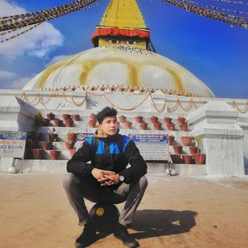
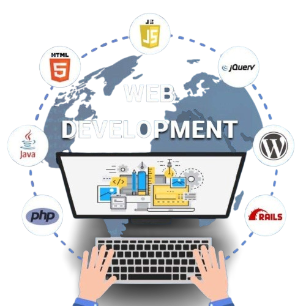
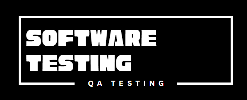
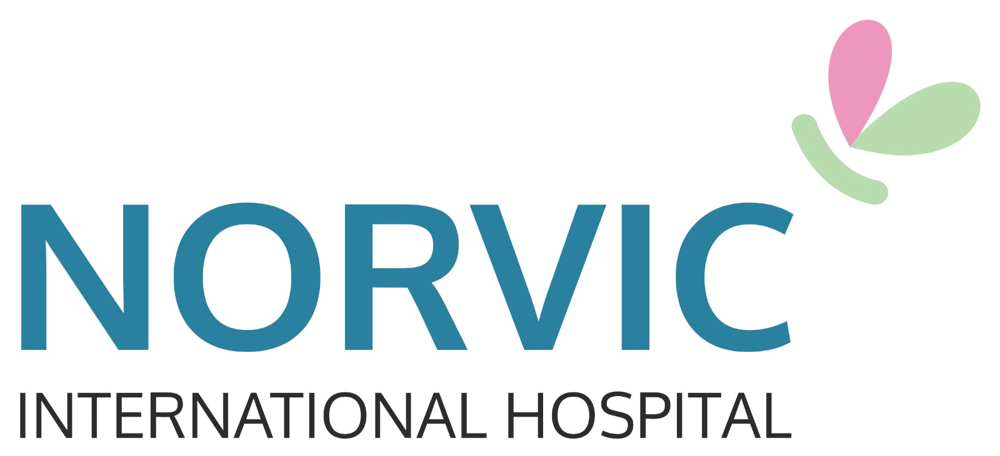

ramak maharjan
IT Enthusiast


NAMASTE !
I'M K a r m a maharjan
Dedicated, passionated and hardworking individual with broad skills and experience in web technologies.I entered in the web development world to explore my passion for designning and developing websites and web applications.


about me
name : ramak maharjan
age : 28
qualification : BIM
post : IT Support Engineer
profession : IT Enthusiast
3+
months of training on web development
1+
years of working experience on Operational Assistant
1+
years of working experience on web technologies
2+
years of working experience on IT officer in NGO
my Contribute


my education
2013
School level completed
I completed my school level form government school. The name of my school is Adinath Secondary School, located at chobhar,kathmandu
2015
HSEB level completed
I completed my +2 level from private higher school, The name of college is Gauri Shankar Higher Secondary School, located at kalimati,kathmandu
2019
Bachelor completed
I completed my bachelor degree from St.Xavier's college, Where i completed BIM(bachelor in information management) course, with 2.81 GPA.
my skills & experience
2020 - 2022
Front end development / IT Support Officer
I am a Frontend Developer skilled in HTML, CSS, JavaScript, React, SQL, and Laravel, designing clean web layouts and writing efficient code. I also serve as an IT Support Officer at an NGO, ensuring data security and accuracy, preparing daily work schedules, monitoring team performance, and creating reports.
2023- 2024
Product Support Of Development Oky Nepal App(Unicef Project)/ Wordpress Theme Developer
I worked as a Product Support Officer in app development, where I coordinated the app’s development, managed cloud-based accounts, handled app publishing, and supported the CMS. I also contributed significantly to the Oky Nepal App, a menstrual tracking application.
2024 - 2025
Operational Assistant
Worked on HMIS(Hospital Management Information Systme) Software and helped to live softwere many big hospital inside and outside nepal.
my Works
my Blogs

contact me